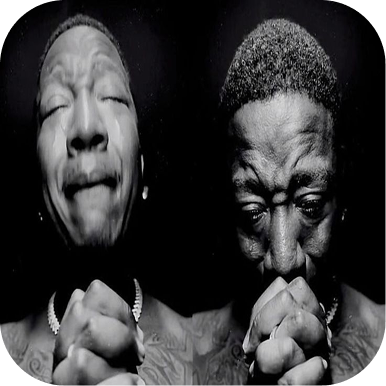
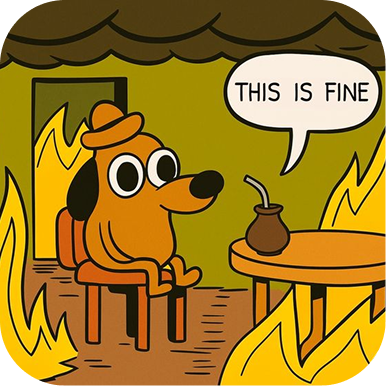
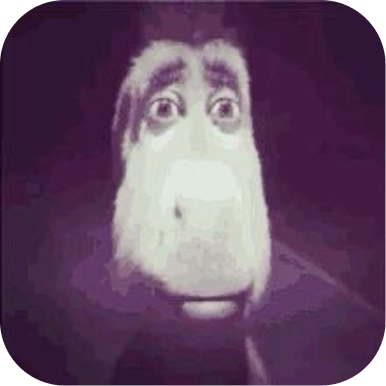
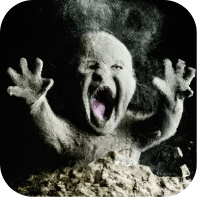
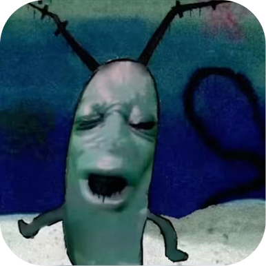

“Cooked” у мемах означає, що прапала всьо. Це про момент, коли ти опинився в ситуації, з якої вже не вибратися, коли тебе розкрили, спіймали, переграли або ти сам себе загнав у кут. Коли кажуть “he’s cooked”, мають на увазі, що шансів немає, результат вже зрозумілий і змінити нічого не вийде. Це коротке слово для позначення повного і очевидного провалу.
Слово “cooked” з’явилося у сленгу ще в англомовних районах інтернету, де ним жартома позначали людину, якій уже нічого не світить у певній ситуації. Спочатку це було схоже на фразу “you’re done”, яку геймери використовували, коли суперник програвав настільки очевидно, що просто не мав шансів. Потім словом почали описувати моменти, коли хтось спалився на брехні, потрапив у безглузду ситуацію або став героєм відео, де все пішло не так. Завдяки TikTok і коротким мемам термін закріпився саме в такому значенні — “тобі кінець”, “ти попав”, “звідси вже не вибратись”. Зараз “cooked” вживають щоразу, коли хтось потрапляє в очевидний, неминучий провал, і це слово звучить настільки просто й влучно, що стало універсальним коментарем до будь-якого фейлу.



